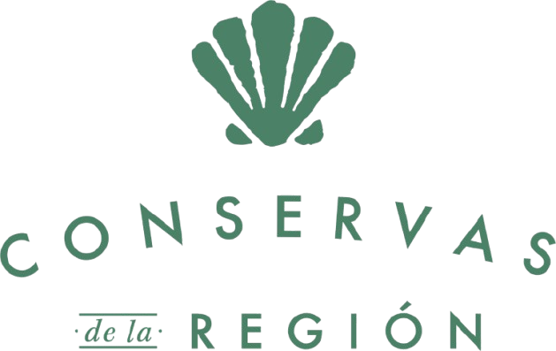

Somos la cuarta generación de una empresa familiar de tradición agrícola que ha combinado conocimiento ancestral con prácticas modernas y sostenibles, dedicada a la producción y comercialización de coco, plátano y sus derivados, así como el aceite de coco y la fruta deshidratada; productos de excelente calidad, con altos niveles nutricionales para el cuidado de nuestra salud. Somos 100% colombianos. Apoyamos a mujeres cabeza de hogar, así como también utilizamos empaques biodegradables y reciclables.
A finales de siglo, los bisabuelos Epifanio Angulo Cabello y Luis Felipe de la Rosa hacen parte de los primeros pobladores que llegaron a San Juan de Urabá atraídos por su tierra fértil provenientes de Bocachica, Islas de Barú y Pasacaballos.
Fundaron un caserío que se llamó “RIOMAR” en la parte alta del río.
Por iniciativa de la abuela Juanita de la Rosa y el abuelo Epifanio Angulo Arévalo inicia en la finca “La Cabaña” la siembra de coco y plátano para comercialización nacional.
Mi padre, Epifanio Angulo de la Rosa funda la empresa AGRÍCOLA SAN RIOMAR S.A.S logrando así, consolidar con el paso del tiempo un complejo agroindustrial.
Nace UNIVERSAL una marca de AGRICOLA SAN RIOMAR S.A.S para exportar sin Intermediarios plátano al exterior, a países como Francia e Inglaterra.
Natalia Angulo Agudelo y Frank Calle Garces fundan Conservas de la región Zomac S.A.S para la producción y comercialización de plátano, coco, creando un nuevo producto Aceite de coco, virgen, prensado en frío.
Nace nuestra marca La Perla. Queriendo lograr mayor reconocimiento de su forma más pura, mientras conocen los beneficios y múltiples usos.